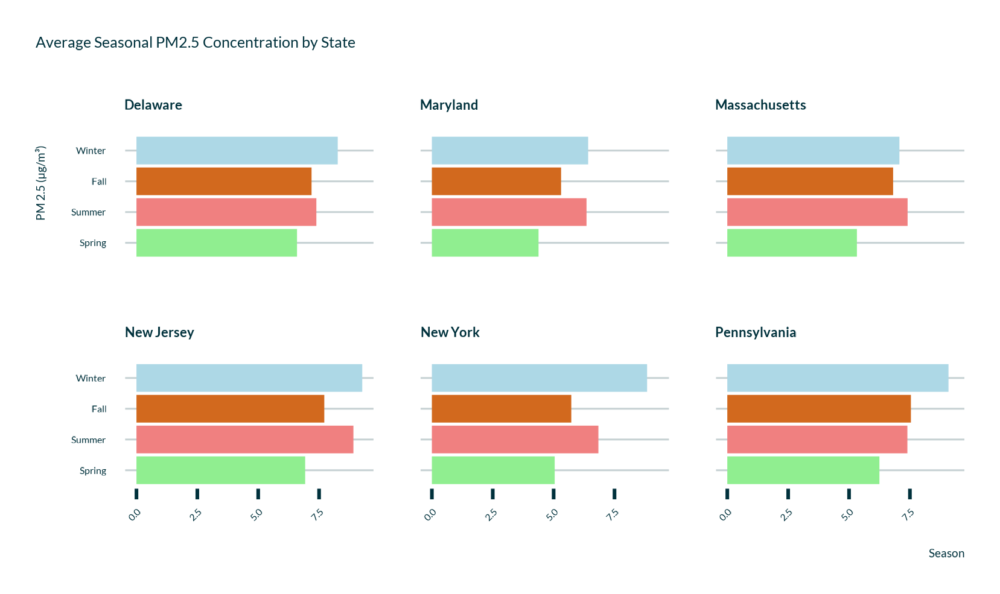

| effect | term | estimate | std.error | statistic | conf.low | conf.high |
|---|---|---|---|---|---|---|
| fixed | (Intercept) | 4.908 | 0.406 | 12.082 | 4.112 | 5.704 |
| fixed | site_nameDUDLEY SQUARE ROXBURY | -0.865 | 0.310 | -2.789 | -1.473 | -0.257 |
| fixed | site_nameVON HILLERN ST | 1.156 | 0.305 | 3.792 | 0.559 | 1.754 |
| fixed | seasonSummer | 1.720 | 0.510 | 3.373 | 0.721 | 2.720 |
| fixed | seasonFall | 1.230 | 0.512 | 2.405 | 0.228 | 2.233 |
| fixed | seasonWinter | 1.106 | 0.526 | 2.105 | 0.076 | 2.136 |
| fixed | site_nameDUDLEY SQUARE ROXBURY:seasonSummer | 0.779 | 0.359 | 2.168 | 0.075 | 1.484 |
| fixed | site_nameVON HILLERN ST:seasonSummer | 0.802 | 0.344 | 2.329 | 0.127 | 1.476 |
| fixed | site_nameDUDLEY SQUARE ROXBURY:seasonFall | 1.309 | 0.358 | 3.661 | 0.608 | 2.010 |
| fixed | site_nameVON HILLERN ST:seasonFall | 0.590 | 0.343 | 1.720 | -0.083 | 1.263 |
| fixed | site_nameDUDLEY SQUARE ROXBURY:seasonWinter | 1.322 | 0.376 | 3.517 | 0.585 | 2.059 |
| fixed | site_nameVON HILLERN ST:seasonWinter | 0.901 | 0.364 | 2.476 | 0.188 | 1.614 |
This week, our focus has been on two main goals:
- Access and download census data for racial and socioeconomic variables in neighborhoods surrounding the EPA air quality monitors.
- Identify seasonal and spatial variability in PM2.5 concentrations based on daily means.
Census Data
According to the Massachusetts DEP 2017 Air Monitoring Network Plan, most PM2.5 sensors operate at a “neighborhood” scale, with a radius of around 0.5-4 km. Using this information, we identified census tracts that intersected a 0.5 km radius around each sensor location. We chose a conservative radius here, knowing that these intersecting tracts extended outside of that 0.5 km radius. This kept the boundaries of included tracts within the “neighborhood” scale radius.
Using the ’“tidycensus” library, we identified key variables including total population and race counts, median income, and poverty status. Then we used an API request to create a dataset of desired variables within the tracts that we had identified.
As a preliminary investigation, we graphed the demographics of each site by racial percentage of population.

We then combined that census dataset with our existing air quality data. Our next steps here will be to investigate the variability in PM2.5 concentrations based on racial percentages and socioeconomic status.
Air Quality Drivers
Before starting on demographic explorations of pollution exposure, we wanted to determine if there was variability in PM2.5 concentration within the neighborhoods of Boston. We also wanted to explore the possibility of seasonal variability in particulate matter concentration.

We developed a fixed-effect linear mixed model to identify trends in PM2.5 concentration by site and season. We chose a LMM with interaction because it allows for variation in daily mean PM2.5.
The output of this model is shown in the table above. The baseline for this model is Kenmore Sq. in Springtime. Each combination of Site and Season (mean) is compared to that baseline PM2.5 concentration (4.91 µg/m3). Each comparison accounts for significant daily variation in PM2.5 concentration.
Main Take-Aways
- Roxbury generally demonstrated lower PM2.5 concentration than Kenmore.
- Dorchester generally demonstrated higher PM2.5 concentration than Kenmore.
- Seasonal trends varied by station.
It is important to note that our data is from 2020, during the height of the COVID-19 pandemic. In particular, we see Spring 2020 (March, April, May) shows the lowest concentrations of PM2.5. This is unsurprising, as the majority of lockdown time occurred during that spring. These trends may not be reproducible across other years of data.
Next Steps
This week, we combined census data with air quality parameters and identified underlying trends in the distribution of particulate matter throughout Boston.
Next, we will develop a gamma model to predict demographic impact of varying particulate matter concentrations throughout the year.
One challenge we anticipate is the temporal disparity between out datasets. PM2.5 is measured hourly, aggregated daily (we downloaded daily means), and then summarized over monthly or seasonal scales. Census data is only measured on an annual scale. It is possible that seasonal variability would be missed if air quality data were to be averaged to a comparable temporal resolution.